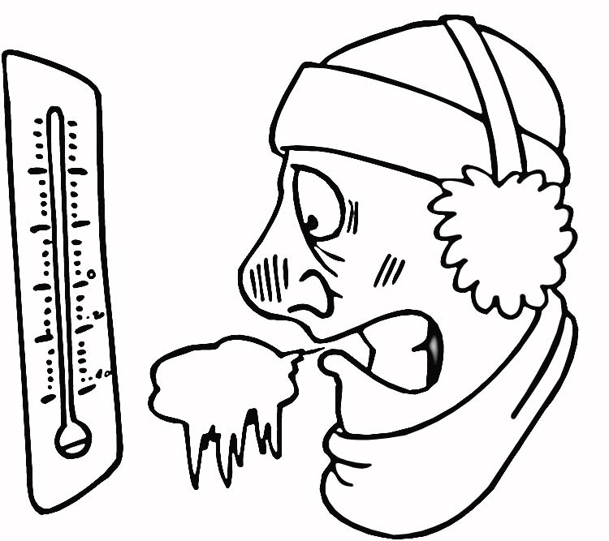
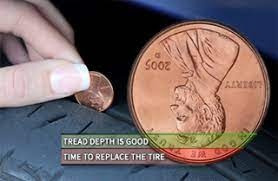

Cold Weather Driving Tips
- Recommended by AAA
Prepare by keeping a bundle of cold-weather gear in your car
* extra food and water ( maybe a can opener,too )
* warm clothing
* a flashlight
* a glass scraper
* blanket
* medications (if necessary)
Did I miss anything?
DRIVING TIPS
1. Keep at least half a tank of fuel in your vehicle at all times.
2. Make certain your tires are properly inflated and have plenty of tread.

3. Never warm up a vehicle in an enclosed area, such as a garage.
4. Slow down...Also, do not use cruise control when driving on any slippery surface, such as on ice and snow
5. Increase your following distance enough so that you’ll have plenty of time to stop for vehicles ahead of you - be gentle on the breaks.
BEWARE:
Black ice - is a thin coating of glaze ice on a surface, especially on streets. It can often be practically invisible to drivers or people stepping
on it - accidents are caused by loss of traction
People are hurrying to get out of the cold. - they might not be as cautious as they should be!